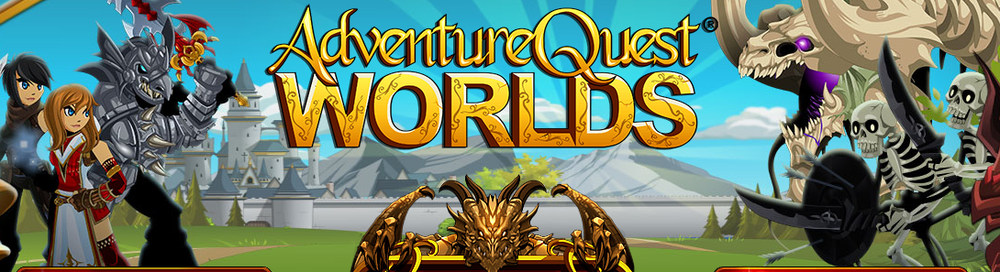
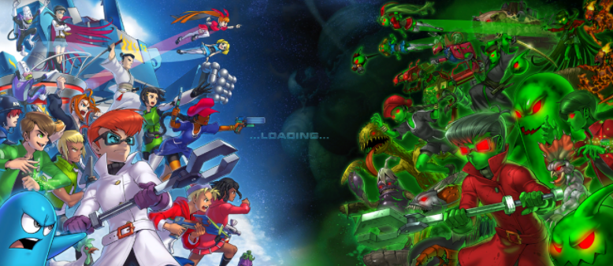
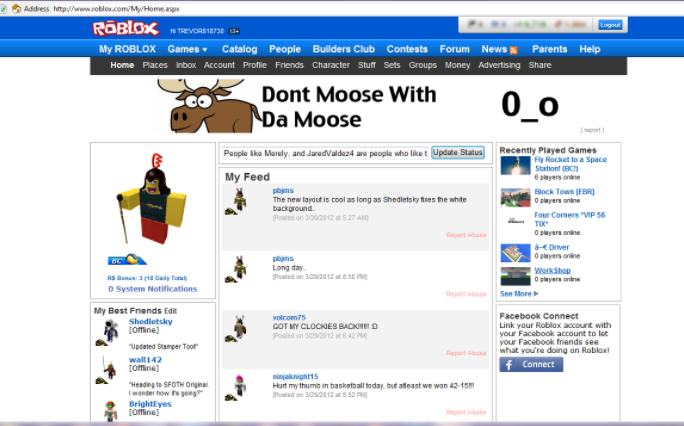

Hi. My name is William Huang and I'm a college junior studying Information Science & Technology.
I like anime, kpop, kdramas, league of legends.
Everyday after school I'd do my homework and spend the day playing online games.
I played adventure quest worlds back in like 2011 until maybe 2015-6. I enjoyed farming to get the best gear or the latest class. Spent some good money on this game too lol 
My little brother learned how to use the computer before he was old enough to go to kindergarten and played fusionfall. He hogged the computer all day and I would only get to watch him play. After
I got a laptop of my own I started playing and got to level 20. Why did I stop at level 20? well my brother told me to teleport to an area with level 36 monsters and after I got there he disappeared
and left me stranded there. The monsters automatically attack you when you walk around so there was no way to get out of the area. :D

Started playing roblox around 2011 too. In the beginning I would just watch my little brother play all day, but eventually I would get a chance to play if he was bored.
Made a lot of memories in this game. The user interface has changed a lot since back then. This is a picture of how roblox used to look like.

I loved ninja saga man. This game was so cool and honestly I'm thinking about playing it again as I'm writing this sentence.